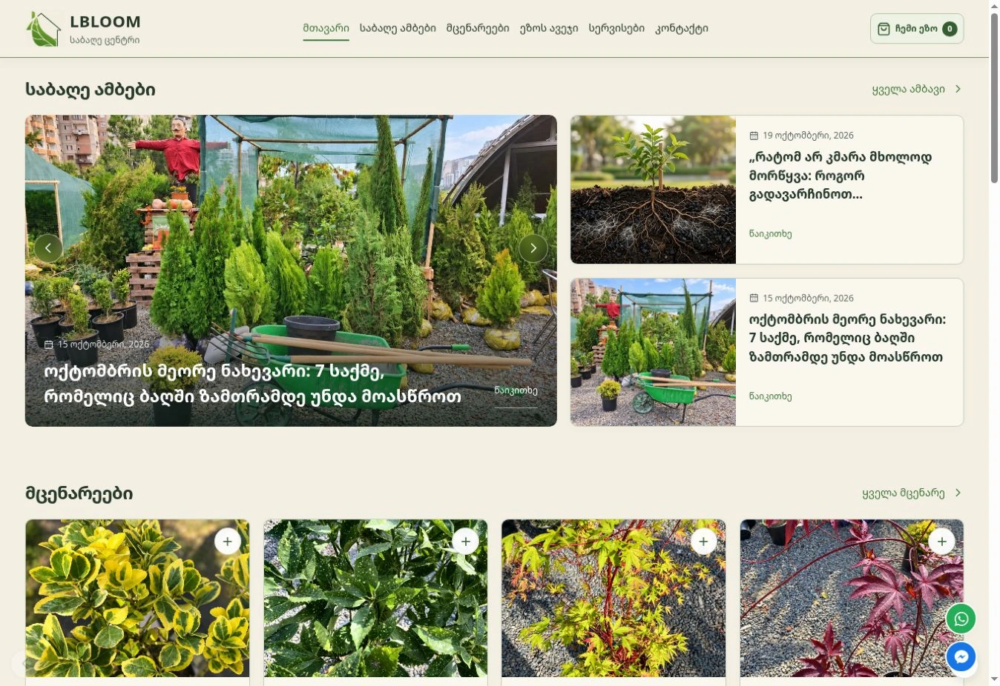

Websites and systems that grow your business.
Design, development and automation from a studio that thinks like a marketer. We start with what should change for your business, then build it.
Featured project
Lbloom: a garden center’s catalog, content and admin system, built end to end.

- The challenge
- A Tbilisi garden center with a wide range of plants and garden furniture needed one place to show its products, share expert advice and turn visitors into calls and store visits.
- What we built
- Custom design and full-stack development: plant and furniture catalogs, a “My Garden” list for saving ideas, garden stories, services pages and video. Plus an admin system the team uses to update everything on its own.
- Today
- The site is live and powers Lbloom’s ongoing digital marketing, which our founder also leads. We see every day how design decisions turn into real customers.
More projects
-
Jibu
In developmentDigital product · Full-stack development
A product we are building with a partner. I handle the full stack, from the interface to the backend. Details stay confidential until launch.
-
NewUni
In progressUniversity website · Redesign
A full redesign of a university website, currently in progress. Details stay confidential until launch.
-
Adswikia
CompletedAdvertising network directory · Redesign
An earlier redesign of the adswikia.com directory. The site has since been redesigned again by another team.
What we can build for you
Websites & online stores
New sites and redesigns that explain your offer clearly and make it easy to get in touch or buy. Responsive, fast, and easy for your team to update.
Discuss a websiteBusiness systems
Admin panels, dashboards and web apps that replace spreadsheets and scattered tools, with the roles, reports and integrations your team actually needs.
Discuss a systemAI agents & automation
Connect your tools and hand repetitive work to software. For example, a website inquiry that lands in your CRM and notifies the right person instantly.
Discuss automationCare & improvements
Fixes, content updates and new features for the website you already have. One-off tasks or ongoing support, with scope and timing agreed upfront.
Discuss a change
You work directly with the person building your project.
I’m Anri Guliashvili. I studied business administration, led front-end development of React and TypeScript systems, and today I also run digital marketing for a retail business. That mix means I build with your customers and your numbers in mind, not just the code.
- Business first
- Every project starts from what should change for your business: more inquiries, less manual work, a clearer offer.
- Fast, focused delivery
- A small studio means shorter timelines, fair prices and one person responsible for your project. Everything is tested before launch.
- Tbilisi-based, working worldwide
- English or Georgian, GMT+4. A comfortable overlap with Europe and the Middle East.
How a project runs
Discover
A short call about your business, your customers and what should change.
Plan
A clear proposal: structure, features, timeline and a cost based on your project’s scope.
Design & build
You see progress as it happens and give feedback at each stage.
Launch & improve
We launch, measure what works and plan the next improvements together.
Tell us what you have in mind.
A new website, a redesign or a tool for your team. A few details are enough to start. Not sure yet? Ask for a free review of your current website and get concrete ideas for improving it.
- Emailcontact@anorik.com
- Phone+995 574 24 02 86
- WhatsAppMessage on WhatsApp